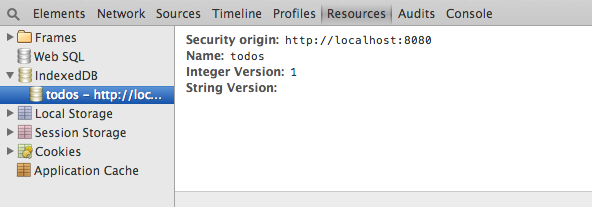
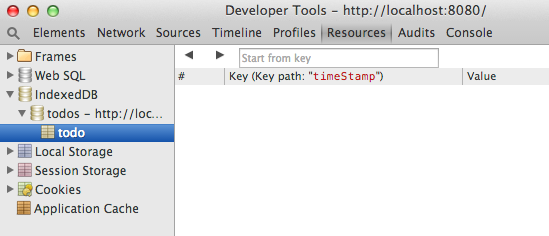
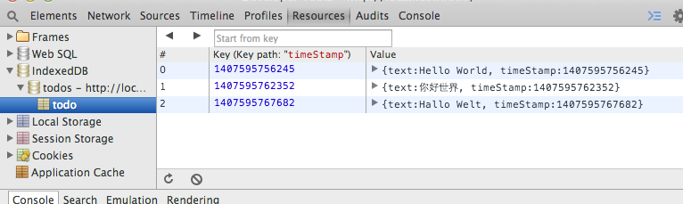
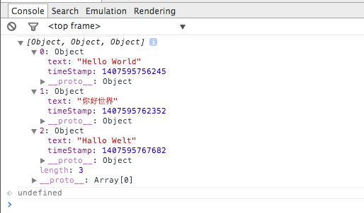
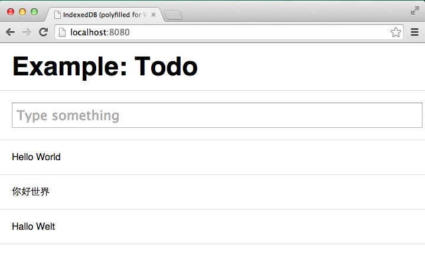

Hi I'm Matt, I work for FT Labs (and you should too). I'm running a workshop on building offline web applications in Freiburg, Germany in September 2014 and again in London in November 2014 - and for the dual purposes of promoting offline-first web applications and shamelessly trying to encourage ticket sales I thought I'd share part of one of the exercises that I'll be guiding people through during those workshops. Much credit due to Paul Kinlan for the work I've plagiarised from him.
We're going to make a simple todo application with HTML5 technologies that stores its data offline. You will be able to add and delete todos, and it should work on the 1st and 2nd most recent versions of all major desktop and mobile browsers. The complete project is ready for forking on GitHub.
In an ideal world there would be just one client database technology. Unfortunately, there are two:-
(Veterans in the offline-first world will now probably be thinking: but we could just use localStorage, which has the benefits of a much simpler API and we won't need to worry about the complexity of using both IndexedDB and WebSQL. Whilst that is technically true, there are a number of problems with localStorage - most importantly the amount of storage space available for localStorage is significantly less than IndexedDB/WebSQL).
Luckily, although we're going to need to use both we only need to think about IndexedDB. To be able to support WebSQL we're going to use an IndexedDB polyfill. This will keep our code clean and easy to maintain and, in the future, when all the browsers we care about are able to support IndexedDB natively, we can simply delete the polyfill.
If you're starting a new project and are currently deciding whether to use IndexedDB or WebSQL, I strongly advocate using IndexedDB and the polyfill. In my opinion, there is no reason to write any new code that integrates with WebSQL directly.
I've described all the steps using Google Chrome (and its developer tools) because currently it's the most popular browser among developers - but there's no reason why you couldn't develop this application with any other modern browser.
Start by creating the following files:-
There should be nothing surprising here - it's a standard HTML5 web page, with an input field to add your items to do and empty unordered list that will be filled with those items.
Again this should be quite familiar - these are just some simple styles to make the todo list look tidy. You can choose not to have any styles at all, or create your own.
All this code does is attempt to create a database and then shows the user an old fashioned alert if it was successful. Every IndexedDB database needs a name (in this case I've named it todos) and it also needs a version number, which I've set to 1.
To check that it's working, open the application in Google Chrome and open up Developer Tools (located under View » Developer » Developer Tools) and click on the Resources tab.

By clicking on the triangle next to IndexedDB, you should see that a database called todos has been created.
Like many database formats that you might be familiar with, within a single IndexedDB database you can create many 'tables'. Those tables are called objectStores. In this step we're going to create an object store called todo, to do this we simply add an event listener on the database's upgradeneeded event.
For our offline todo app we're going to the data format as simple as possible and store javascript objects with two properties:-
For example:
{ timeStamp: 1407594483201, text: 'Wash the dishes' }
This will create an object store keyed by timeStamp called todo.
Having updated application.js, if you open the web app again you'll notice that not a lot happens (try adding a console.log in the onupgradeneeded callback to be sure). The problem is we haven't increased the version number so the browser doesn't know it needs to run the upgrade callback.
Whenever you need to add or remove object stores you will need to increment the version number - otherwise the structure of the data will be different to what your code expects and you risk breaking your application in ways that can be very difficult to fix.
There is another way to fix this that we can use because this application doesn't have any real users yet - and that is to delete the database. Copy this line of code into the Console (last tab in Developer Tools), press enter and then refresh the page:-
indexedDB.deleteDatabase('todos');
After refreshing, the Resources pane of Developer Tools should have changed and should now show the object store that we added:-
The next step is to enable adding todos.
We've added two new bits of code here:-
To test this is working, open up the web app in Chrome again. Type some words into the input element and press enter. Repeat this a few times and then open up Developer Tools on the Resources tab again. You should see the items that you typed in now appear in the todo object store.
Now that we've got some data stored, the next step is to work out how to retrieve that data.
After the database has been initialised, what this will do is retrieve all of the todos and output them to the Developer Tools console.
Notice how the onsuccess callback is called after each todo is retrieved from the object store. To keep things simple we put each result into an array called data and when we run out of results (which happens when we've retrieved all of the todos) we called the callback with that array. This approach is simple but other approaches might be more efficient.
If you re-open the application in Chrome again, Developer Tools console should look a bit like this:-
The next step after retrieving the todos is displaying them.
All we've added is a couple of very simple functions that render the todos:-
Finally we're at a point where we can actually see what our application is doing without having to look through Developer Tools! Open it up in Chrome and you should see something like this:-
But we're not done yet. Because the application is only displaying todos when it starts, if we add any new ones - they don't appear unless we refesh the page.
We can now fix this with a single line of code.
Although this is very simple, it's not very efficient. Every time we add a todo the code will need to retreieve every single todo from the database again and render them all on screen. Think about how this could be made more efficient.
To keep things as simple as possible we will let users delete todos by clicking on them (for real applications we would probably want a dedicated delete button or to show a dialog so that todos don't get accidentally deleted, but this will be fine for our little prototype).
To achieve this we will be a little bit hacky and give all the todos an id that is set to their timeStamp. This will allow the click event listener, which we will add to the document body, to identify when we click on a todo (as opposed to anywhere else on the page).
We've made the following enhancements:-
The todo app is basically feature complete - you can add and delete todos and it works any browser that supports WebSQL or IndexedDB (although it could be a lot more efficient).
Almost, but not quite. Although we can now store all the todo data offline, if you switch your device's internet connection off and try loading the application, it won't open. To fix this we need to use either the HTML5 AppCache or ServiceWorker
Also, by storing all the data on the user's device we're not really taking full advantage of the full power of the web. Wouldn't it be better if the application could synchronise with a server so that you could manage your todos on any of your devices, whether the device was online or not?